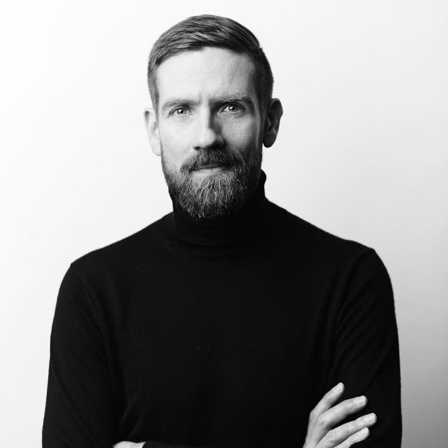

01
We design spaces for gathering, learning, and reflecting — from brutalist libraries to modular museums.
< - - We built these - - >
< - - We built these - - >
< - - We built these - - >
< - - We built these - - >
< - - We built these - - >
< - - We built these - - >
< - - We built these - - >
< - - We built these - - >
02
Minimal homes with maximum intention. Architecture that adapts, breathes, and listens.
03
Micro-structures, pavilions, and installations that stitch forgotten places back into the city.
04
Research-driven design that explores new forms, sustainable materials, and poetic modularity.
/* Inspired by the grid, the draft, the blueprint, we design spaces that breathe simplicity and reflect precision. */
/* Each project is an exercise in restraint and expression, in tension and ease. */
/* Our aesthetic is informed by Soviet modernism and the tactile honesty of raw materials. Concrete, glass, silence, light — these are our words. */
/* We seek beauty in the alignment of edges and the rhythm of repetition. */
Founder / Architectural Strategist
A former engineer with the soul of a poet.
Creative Director
Graphic thinker. Editorial mind. Dmitri ensures every project reads as clearly as it lives.
Designer / Research Lead
Obsessed with staircases, urban voids, and the geometry of everyday life.
# We don't chase trends.
## We don't design for ego.
### We design for meaning.
@
konstruct@arch.com
- - > Instagram < - -
- - > LinkedIn < - -